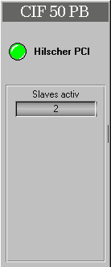

|
axs_CIF60_PB |
Features | Installation | User Interface |Implementation Notes | Settings
The CIF 60
PB panel displays if there is an Hilscher PCI Card installed and denotes the
values of
Features | Installation | User Interface | Implementation Notes | Settings
The
axs_CIF60_PB class is comprised of the following components (files):
|
Class Component |
Description |
File Name(s) |
|
Class File |
Includes the process picture representation and any popup menus. |
axs_CIF60_PB.symbol |
|
Graphic Files |
Class Specific Graphic Files for both, class definition and
documentation. |
some documentation |
|
HTML-Document |
HTML document for Online Help. |
axs_CIF60_PB.htm |
Installation:
The
above listed files must be copied into a common sub-directory within the
project's "classlib" directory. The name of the common directory can
be chosen freely.
Features | Installation | User Interface | Implementation Notes | Settings
CIF 60 PB Panel
The CIF
60 PB panel displays if there is an Hilscher PCMCIA Card existing and denotes
the values of

The
LED display at the top of the panel indicates the error-state.
The
following table provides a summary:
|
LED Color |
Description |
|
Green |
There is no error. |
|
Red |
An error occurs. |
Features | Installation | User Interface | Implementation Notes | Settings
The
axs_CIF60_PB class is an integral part of the "axsystem" program. In
terms of implementation it is required to have the "axsystem.tree"
program installed into the running project. I.e. in the
"Configuration" directory of the Project Window.
Features | Installation | User Interface | Implementation Notes | Settings
Card and Profibus Settings / Status
Features | Installation | User Interface | Implementation Notes | Settings